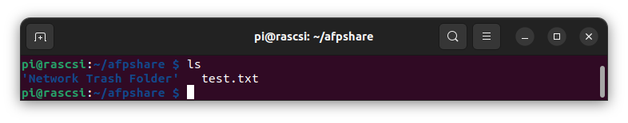
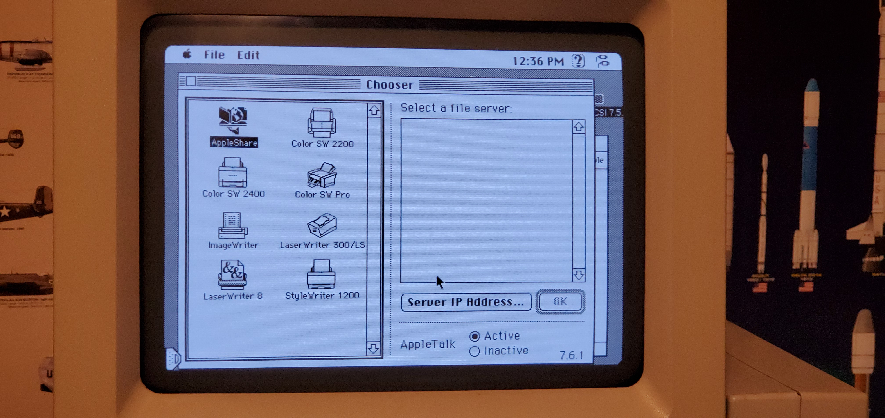
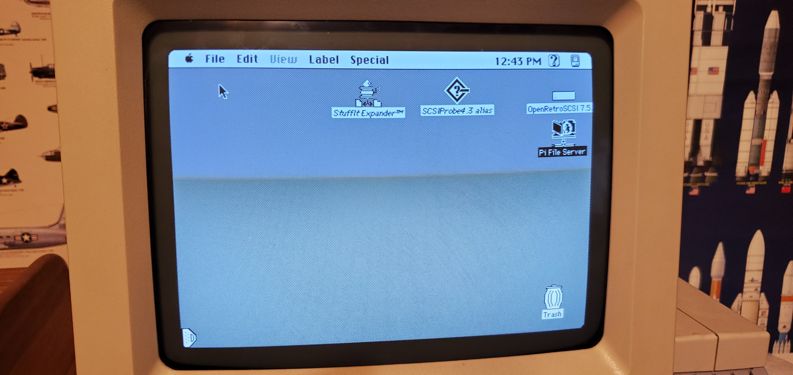

Netatalk APF for linux install
Also see Apple File Share section Mac Librian's excellent youtube RaSCSI tutorial
cd ~/RASCSI
./easyinstall.sh
Choose "8" to intall Netatalk
.~~. .~~.
'. \ ' ' / .'
.╔═══════╗.
: ║|¯¯¯¯¯|║ :
~ (║|_____|║) ~
( : ║ . __ ║ : )
~ .╚╦═════╦╝. ~
( ¯¯¯¯¯¯¯ ) RaSCSI Assistant
'~ .~~~. ~'
'~'
Choose among the following options:
INSTALL/UPDATE RASCSI (FULLSPEC version)
1) install or update RaSCSI Service + Web Interface
2) install or update RaSCSI Service
3) install or update RaSCSI OLED Screen (requires hardware)
CREATE HFS FORMATTED (MAC) IMAGE WITH LIDO DRIVERS
** For the Mac Plus, it's better to create an image through the Web Interface **
4) 600MB drive (suggested size)
5) custom drive size (up to 4000MB)
NETWORK BRIDGE ASSISTANT
6) configure network bridge for Ethernet (DHCP)
7) configure network bridge for WiFi (static IP + NAT)
INSTALL COMPANION APPS
8) install AppleShare File Server (Netatalk)
9) install Web Proxy Server (Macproxy)
ADVANCED OPTIONS
10) compile and install RaSCSI stand-alone
11) configure the RaSCSI Web Interface stand-alone
EXPERIMENTAL FEATURES
12) install or update RaSCSI Control Board UI (requires hardware)
Enter your choice (0-12) or CTRL-C to exit: 8
Edit /etc/netatalk/atalkd.conf and add rascsi_bridge to the end
sudo nano /etc/netatalk/atalkd.conf
# Format of lines in this file:
#
# interface [ -seed ] [ -router | -dontroute ]
# [ -phase { 1 | 2 } ] [ -addr net.node ]
# [ -net first[-last] ] [ -zone ZoneName ] ...
#
# -seed only works if you have multi-interfaces. Any missing arguments are
# automatically configured from the network. Note: lines can't actually be
# split, tho it's a good idea.
#
# -router is like -seed but it allows single-interface routing. -dontroute
# disables routing for the specified interface.
#
# Some examples:
#
# The simplest case is no atalkd.conf. This works on most platforms
# (notably not Solaris), since atalkd can discover the local interfaces
# on the machine.
#
# Very slightly more complicated:
#
# le0
# or
# eth0
#
# for Solaris or Linux.
#
# A much more complicated example:
#
# le0 -phase 1
# le1 -seed -phase 2 -addr 66.6 -net 66-67 -zone "No Parking"
#
# This turns on transition routing between the le0 and le1
# interfaces on a Sun. It also causes atalkd to fail if other
# routers disagree about it's configuration of le1.
#
rascsi_bridge
Restart afpd service
sudo systemctl restart afpd
A default afpshare folder has been created in your home directory

Go to Chooser in apple menu and open appleshare folder at 192.168.0.241



